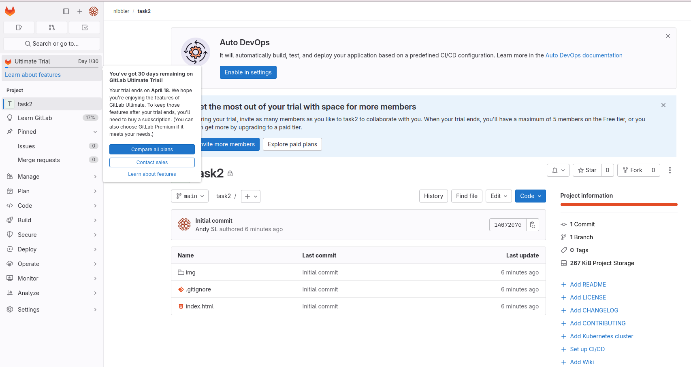
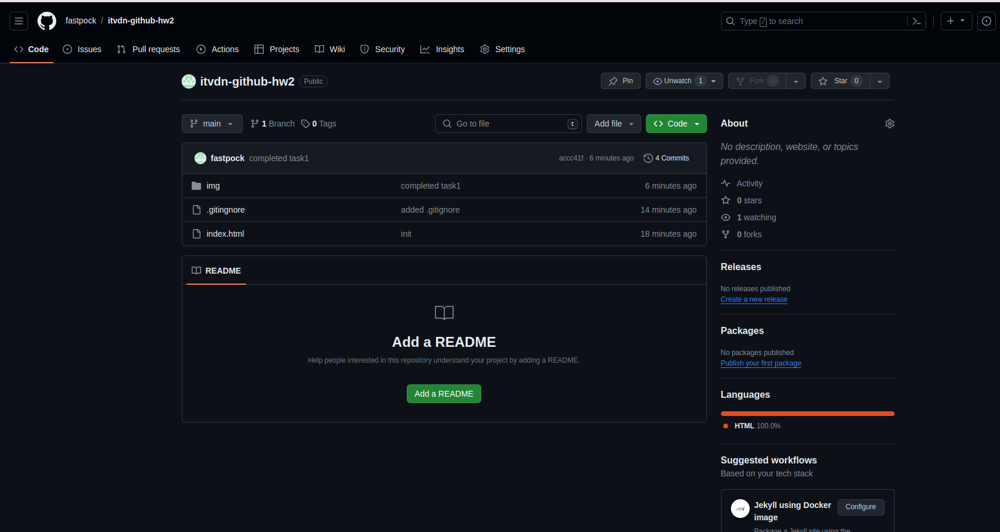

Домашня робота №2
Завдання 1:
Створіть проект на Gitlab і додайте файли до репозиторію.

Завдання 2:
Створіть проект на GitHub і додайте файли до репозиторію.

Завдання 3:
Створіть проект додайте 3 файли та створіть коміт. Створіть нову гілку та додайте ще 5 файлів. Виконайте об’єднання гілок. Після виконання злиття гілок зайву видаліть.
Завдання 4:
Надішліть репозиторій на віддалений сервер.
Завдання 5:
Додайте ще гілки dev та test на віддаленому репозиторії й додайте у кожну по 5 файлів. Виконайте коміти файлів. Відобразіть усі гілки на екрані та усі коміти у гілках.
Завдання 6:
Виконайте клонування репозиторія з віддаленного серверу на свій комп’ютер.
Завдання 7:
Створіть нові версії файлів. Створіть коміти. Надішліть зміни на віддалений сервер. Відобразіть усі коміти у гілках.
Завдання 8:
У віддаленому репозиторії зробіть злиття гілок dev/test та синхронізуйте зміни з локальним репозиторіем.
Завдання 9:
Створіть новий репозиторій з модифікатором доступу private. Надайте хоча б 5-м колегам доступ до нього. Перейшовши за посиланням кожний повинен:
• клонувати проект на ПК;
• створити нову гілку;
• додати декілька файлів;
• надіслати зміни на віддалений сервер;
• зробити code-review.